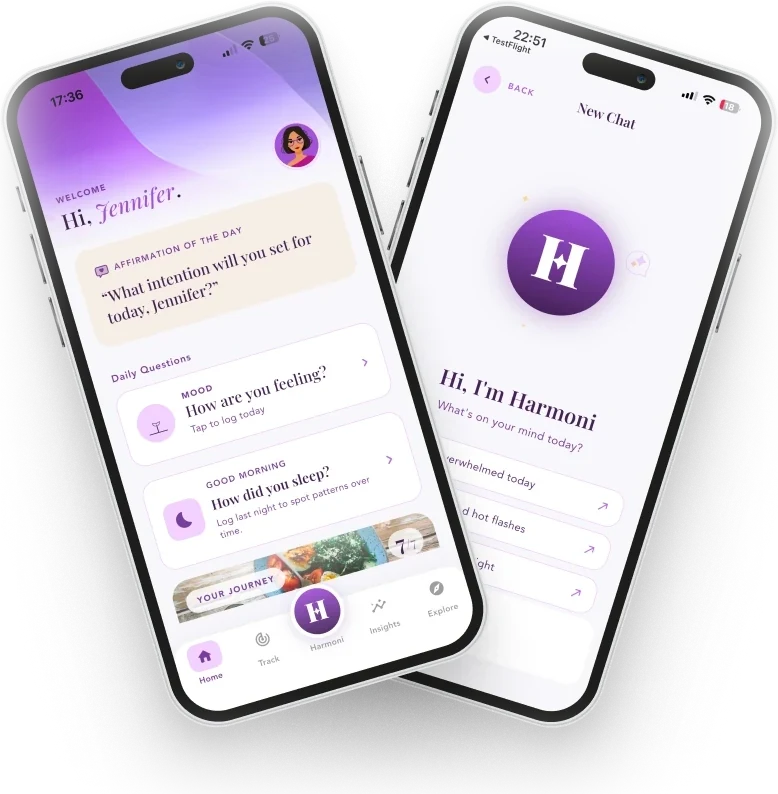
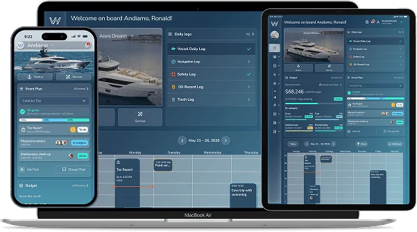
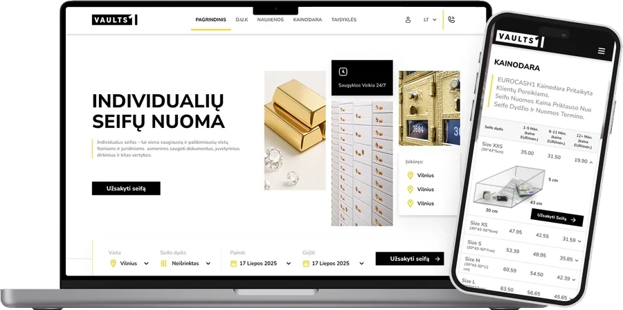
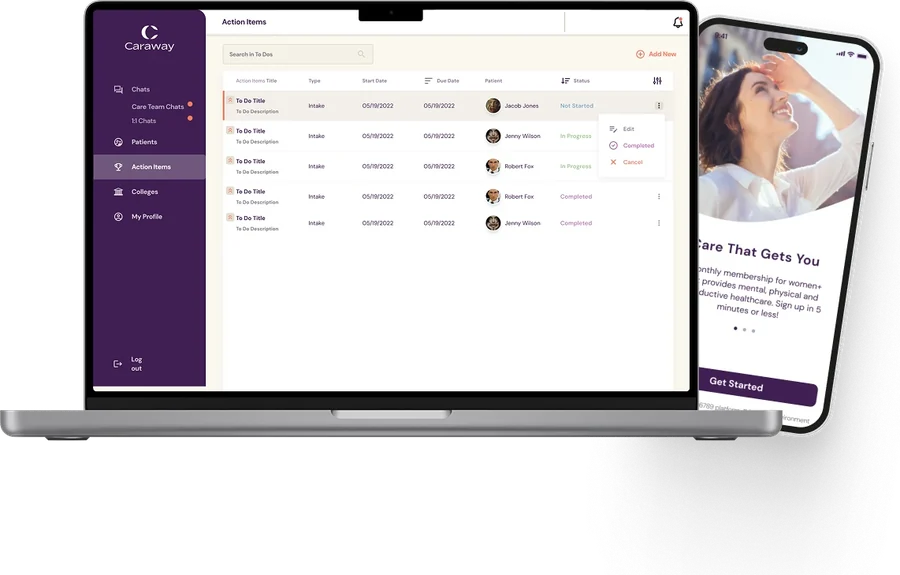
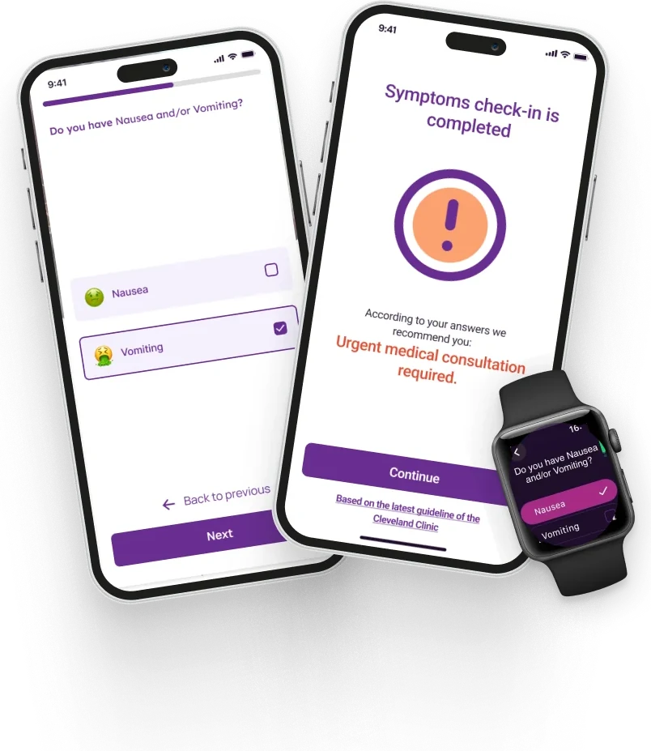
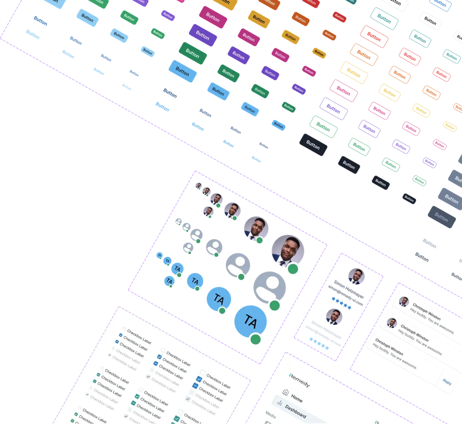
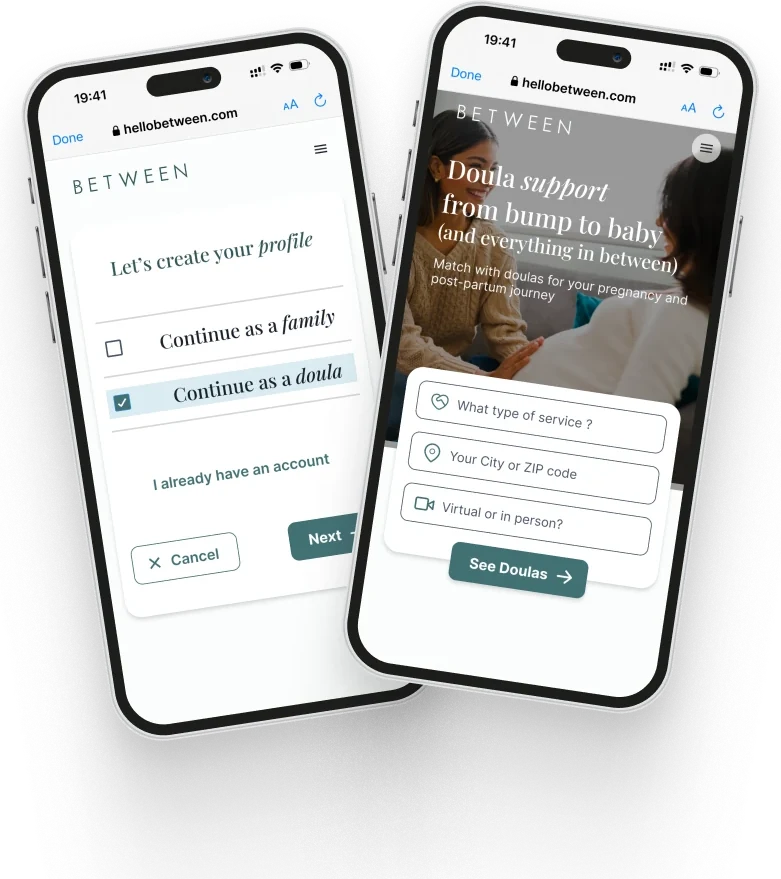
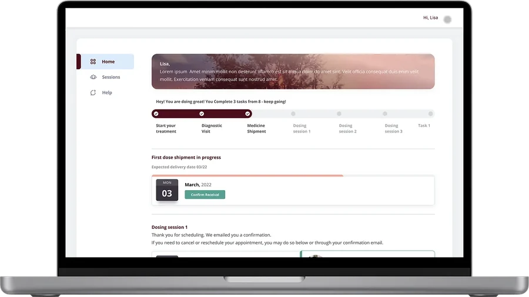
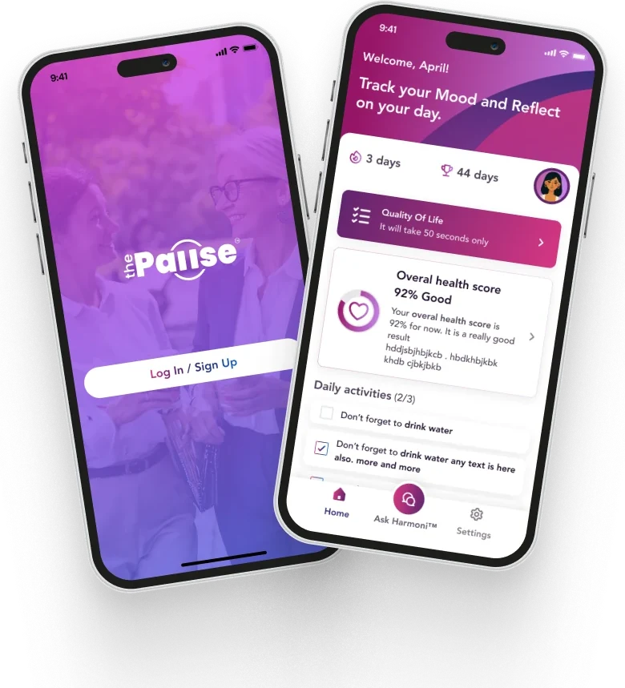
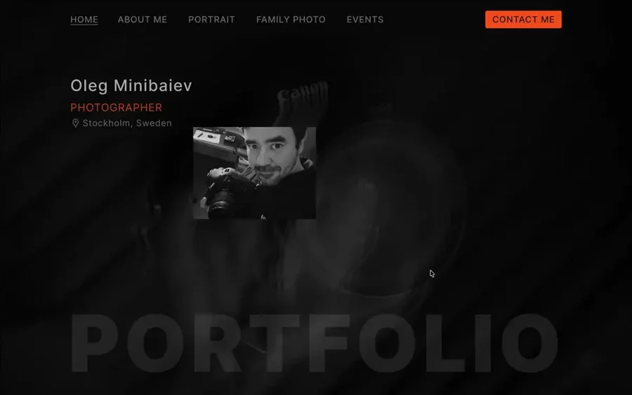

WORK / PRODUCT DESIGN CASE STUDIES
Complex challenges.
Real product stories.
Discovery, research, design systems, and delivery across healthcare, SaaS, and multi-role digital products.

Harmoni® by ThePause®
Rebrand, design system and a funnel diagnosis that nearly halved sign-up drop-off.
View case study ↗
VesselHaven
Role-based yacht management on a 65-component system. The Provider CRM shipped 7 screens with no new components.
View case study ↗
Vaults1
Sizes you can see and a quick-booking bar, plus sign-off on a project stalled for months.
View case study ↗
Caraway Health
Launched student health app, provider desktop app and SaaS admin, all on one design system.
View case study ↗
She Matters
Sole designer on an iPhone and Apple Watch MVP that alerts her doctor or partner when symptoms turn dangerous.
View case study ↗
Remedy Design System 2.0
One themeable system for web and React Native. Leadership reported ~45% less dev time at handoff.
View case study ↗
Between Health
A mobile-first MVP matching families with doulas, scoped from a long wish list in a few weeks.
View case study ↗
Breakthrough Therapy
Research, a scalable design system and an MVP design for a ketamine therapy patient app and clinician dashboard.
View case study ↗
ThePause
Concept to tested MVP, with a swipe symptom check-in users loved. Prototypes raised task accuracy by 30%.
View case study ↗
Photographer Portfolio
A portfolio that lets the photographs lead.
View case study ↗INDEPENDENT PRODUCTS & EXPERIMENTS
From an idea to something you can try.
ILLUSTRATION STUDIES · PRODUCT DESIGN · LIVE
A little crisis. A complete product.
An illustration-learning project turned into a reflective quiz: emotional habits, 17 expressive characters, and a marketing hypothesis built around self-discovery and sharing.